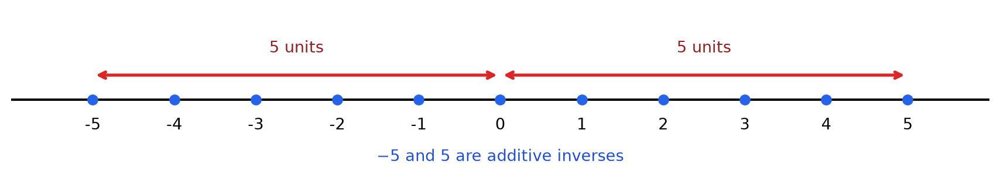

Properties of Number Sets
1 Beginning with a question
Teacher: We have already built three number sets: natural numbers, whole numbers, and integers. Today we will ask a new question: What happens when we perform operations on numbers from a set?
Student: You mean addition, subtraction, multiplication, and division?
Teacher: Exactly. We will investigate whether the answer always remains in the same set, whether changing the order changes the answer, and whether regrouping changes the answer.
The number sets in this lesson are:
\[ \mathbb{N}=\{1,2,3,4,\ldots\} \]
\[ \mathbb{W}=\{0,1,2,3,4,\ldots\} \]
\[ \mathbb{Z}=\{\ldots,-3,-2,-1,0,1,2,3,\ldots\} \]
We will use the four basic operations:
- Addition: \(+\)
- Subtraction: \(-\)
- Multiplication: \(\times\)
- Division: \(\div\)
Throughout this note, we use the convention that natural numbers begin with 1.
2 Closure: staying inside the set
Teacher: Imagine that a set is a classroom. If I choose two students from the classroom and perform an operation on their numbers, what would it mean for the classroom to be closed under that operation?
Student: Perhaps the answer must also be a student in the same classroom?
Teacher: That is a useful way to think about it. A set is closed under an operation if applying that operation to members of the set always produces another member of the same set.
For a set \(S\) and an operation \(*\), closure means:
\[ \text{if }a\in S\text{ and }b\in S,\text{ then }a*b\in S. \]
The important word is always. One successful example is not enough to prove closure. To show that a set is not closed, one counterexample is enough.
2.1 Addition and natural numbers
Teacher: Let us begin with natural numbers. What happens when we add two natural numbers?
Student: For example, \(2+5=7\). The answer is still natural.
Teacher: Can you think of two natural numbers whose sum is not natural?
Student: No. Adding positive counting numbers always gives another positive counting number.
Therefore, the natural numbers are closed under addition:
\[ a,b\in\mathbb{N}\implies a+b\in\mathbb{N}. \]
Examples:
\[ 1+4=5,\qquad 8+6=14,\qquad 100+25=125. \]
2.2 Multiplication and natural numbers
Teacher: What about multiplication?
Student: A natural number multiplied by another natural number gives a natural number. For example, \(3\times4=12\).
Teacher: Correct. Natural numbers are also closed under multiplication.
\[ a,b\in\mathbb{N}\implies ab\in\mathbb{N}. \]
2.3 Subtraction and natural numbers
Teacher: Now let us try subtraction. Is \(7-3\) natural?
Student: Yes, it is 4.
Teacher: Is \(3-7\) natural?
Student: No. It is \(-4\), which is not a natural number.
Teacher: Therefore, what can we conclude?
Student: Natural numbers are not closed under subtraction.
One counterexample is sufficient:
\[ 3,7\in\mathbb{N},\qquad 3-7=-4\notin\mathbb{N}. \]
The problem is that subtraction can move us to the left of zero, while natural numbers contain only positive counting numbers.
2.4 Division and natural numbers
Teacher: Let us try division. Is \(8\div2\) natural?
Student: Yes, it is 4.
Teacher: Is \(2\div8\) natural?
Student: No. It is \(\frac14\), which is not a natural number.
Teacher: So natural numbers are not closed under division.
\[ 2,8\in\mathbb{N},\qquad 2\div8=\frac14\notin\mathbb{N}. \]
Division can produce a fraction, and natural numbers do not include fractions.
3 Closure of the whole numbers
Teacher: Whole numbers include zero as well as the natural numbers. Does adding zero change the closure results?
Student: Let me check operation by operation.
3.1 Addition and multiplication
Whole numbers are closed under addition:
\[ 0+5=5,\qquad 6+3=9. \]
They are also closed under multiplication:
\[ 0\times8=0,\qquad 4\times7=28. \]
In general,
\[ a,b\in\mathbb{W}\implies a+b\in\mathbb{W}\text{ and }ab\in\mathbb{W}. \]
3.2 Subtraction
Teacher: Is the set of whole numbers closed under subtraction?
Student: \(2-5=-3\), and \(-3\) is not a whole number. So no.
\[ 2,5\in\mathbb{W},\qquad 2-5=-3\notin\mathbb{W}. \]
3.3 Division
Student: Whole numbers are not closed under division either, because \(3\div2=\frac32\) is not a whole number.
\[ 3,2\in\mathbb{W},\qquad 3\div2=\frac32\notin\mathbb{W}. \]
Adding zero makes the set larger, but it does not add negative numbers or fractions. Therefore, the closure table for whole numbers is the same as for natural numbers.
4 Closure of the integers
Teacher: Integers include negative numbers, so subtraction may work better. Let us test all four operations.
4.1 Addition, subtraction, and multiplication
Integers are closed under addition:
\[ -4+7=3,\qquad -5+(-2)=-7. \]
They are closed under subtraction:
\[ 3-8=-5,\qquad -2-(-6)=4. \]
They are closed under multiplication:
\[ (-3)\times4=-12,\qquad (-2)\times(-5)=10. \]
Student: In each case, the answer is still an integer.
Teacher: Yes. Adding, subtracting, or multiplying integers never creates a fraction.
4.2 Division
Teacher: Is division always safe for integers?
Student: \(8\div2=4\) is an integer, but \(2\div8=\frac14\) is not.
Teacher: Therefore, integers are not closed under division.
\[ 2,8\in\mathbb{Z},\qquad 2\div8=\frac14\notin\mathbb{Z}. \]
5 Closure table
The results can be organised as follows.
| Number set | Addition | Subtraction | Multiplication | Division |
|---|---|---|---|---|
| Natural numbers \(\mathbb{N}\) | Yes | No | Yes | No |
| Whole numbers \(\mathbb{W}\) | Yes | No | Yes | No |
| Integers \(\mathbb{Z}\) | Yes | Yes | Yes | No |
Teacher: What pattern do you see?
Student: Moving from natural numbers to whole numbers fixes the need for zero, but not negative answers or fractions. Moving to integers fixes subtraction, but division can still produce fractions.
Closure depends on both the set and the operation. We should never say simply, “This set is closed.” We should say, for example, “The integers are closed under subtraction” or “The whole numbers are not closed under division.”
6 Commutative property: does order matter?
Teacher: Closure asked whether we stay in the set. Now we will ask a different question: Does changing the order change the answer?
Student: For addition, \(3+5\) and \(5+3\) both equal 8.
Teacher: Exactly. This is the commutative property.
An operation is commutative when changing the order of the two numbers does not change the result:
\[ a*b=b*a. \]
6.1 Addition is commutative
Addition is commutative for natural numbers, whole numbers, and integers.
\[ 4+7=7+4=11 \]
\[ -3+8=8+(-3)=5 \]
6.2 Multiplication is commutative
Multiplication is also commutative for all three sets:
\[ 3\times5=5\times3=15 \]
\[ (-2)\times6=6\times(-2)=-12 \]
The numbers may be negative, but changing their order does not change the product.
6.3 Subtraction is not commutative
Teacher: Does the same idea work for subtraction?
Student: \(9-4=5\), but \(4-9=-5\). The answers are different.
Teacher: So subtraction is not commutative.
\[ 9-4\neq4-9. \]
The order matters because subtraction tells us to start with the first number and take away the second.
6.4 Division is not commutative
Division is not commutative either:
\[ 12\div3=4, \qquad 3\div12=\frac14. \]
Thus,
\[ a\div b\neq b\div a \]
in general, whenever both divisions are defined.
7 Associative property: does grouping matter?
Teacher: We have changed the order of two numbers. Now let us keep the order the same but change the grouping of three numbers.
Student: What does changing the grouping mean?
Teacher: Compare these two expressions:
\[ (2+3)+4 \]
and
\[ 2+(3+4). \]
The order is still 2, then 3, then 4. Only the brackets have moved.
An operation is associative when changing the grouping does not change the answer:
\[ (a*b)*c=a*(b*c). \]
The brackets tell us which operation is performed first.
7.1 Addition is associative
Addition is associative for natural numbers, whole numbers, and integers.
\[ (2+3)+4=5+4=9 \]
\[ 2+(3+4)=2+7=9 \]
Therefore,
\[ (2+3)+4=2+(3+4). \]
This remains true when negative integers are used:
\[ ((-5)+2)+7=-3+7=4 \]
\[ (-5)+(2+7)=-5+9=4. \]
7.2 Multiplication is associative
Multiplication is associative for all three number sets:
\[ (2\times3)\times4=6\times4=24 \]
\[ 2\times(3\times4)=2\times12=24. \]
For integers,
\[ ((-2)\times3)\times4=-6\times4=-24 \]
\[ (-2)\times(3\times4)=(-2)\times12=-24. \]
7.3 Subtraction is not associative
Teacher: Let us test subtraction.
Student:
\[ (10-6)-2=4-2=2 \]
but
\[ 10-(6-2)=10-4=6. \]
The answers are different.
Therefore, subtraction is not associative:
\[ (10-6)-2\neq10-(6-2). \]
7.4 Division is not associative
Division is not associative either:
\[ (24\div6)\div2=4\div2=2 \]
but
\[ 24\div(6\div2)=24\div3=8. \]
Thus,
\[ (24\div6)\div2\neq24\div(6\div2). \]
8 Property table
For natural numbers, whole numbers, and integers, the commutative and associative results are the same wherever the operation is defined.
| Operation | Commutative? | Associative? |
|---|---|---|
| Addition | Yes | Yes |
| Subtraction | No | No |
| Multiplication | Yes | Yes |
| Division | No | No |
Teacher: Can we use the word “associative” for two numbers?
Student: No. Associativity concerns the grouping of three numbers, while commutativity concerns changing the order of two numbers.
That distinction is important:
- Commutative: change the order: \(a+b\) versus \(b+a\).
- Associative: change the grouping: \((a+b)+c\) versus \(a+(b+c)\).
9 Additive identity: adding nothing
Teacher: We now turn to addition. Is there a number that we can add without changing a number?
Student: Adding zero does that. For example, \(7+0=7\).
Teacher: Correct. Zero is called the additive identity.
A number \(e\) is an additive identity for a set if adding it to any number in the set leaves that number unchanged:
\[ a+e=a=e+a. \]
For ordinary number systems, the additive identity is \(0\).
\[ a+0=a=0+a. \]
9.1 Which sets contain the additive identity?
- Natural numbers do not contain 0 under our convention. Therefore, the natural numbers do not contain their additive identity.
- Whole numbers contain 0. Therefore, the whole numbers contain their additive identity.
- Integers contain 0. Therefore, the integers contain their additive identity.
Student: Natural numbers can still be added to zero, but zero is not a member of the natural-number set.
Teacher: Exactly. The identity exists in the larger number system, but it is not included in \(\mathbb{N}\) as we have defined it.
10 Additive inverse: cancelling a number
Teacher: Now let us ask a different question. What number can we add to 5 to get back to zero?
Student: \(-5\), because \(5+(-5)=0\).
Teacher: Good. \(-5\) is the additive inverse of 5.
The additive inverse of a number \(a\) is the number \(-a\) such that
\[ a+(-a)=0. \]
Examples:
\[ 7+(-7)=0, \]
\[ -3+3=0, \]
\[ 0+0=0. \]
The additive inverse changes the direction of a number on the number line. The numbers \(a\) and \(-a\) are the same distance from zero but lie on opposite sides.
11 Additive inverses in the three sets
11.1 Natural numbers
Teacher: Does every natural number have its additive inverse in the natural numbers?
Student: The additive inverse of 4 is \(-4\), but \(-4\) is not natural. So no.
Natural numbers do not contain the additive inverse of any positive natural number. The exception would be 0, but 0 is not in \(\mathbb{N}\) under our convention. Therefore, \(\mathbb{N}\) does not contain additive inverses for its members.
11.2 Whole numbers
Whole numbers also do not contain additive inverses for their positive members:
\[ 5\in\mathbb{W},\qquad -5\notin\mathbb{W}. \]
The number 0 is its own additive inverse because
\[ 0+0=0. \]
However, having one member with an inverse is not enough for the set to contain additive inverses for all its members. Therefore, the whole numbers do not contain additive inverses for all their members.
11.3 Integers
Teacher: What about the integers?
Student: If \(a\) is an integer, then \(-a\) is also an integer. So every integer has its additive inverse in the integers.
Examples:
\[ 6\text{ and }-6, \qquad -9\text{ and }9, \qquad 0\text{ and }0. \]
Therefore, the integers contain an additive inverse for every member.
12 Identity and inverse are different
Student: Both additive identity and additive inverse involve zero. Are they the same idea?
Teacher: No. They are related, but they answer different questions.
| Idea | Question | Example |
|---|---|---|
| Additive identity | What can I add without changing the number? | \(8+0=8\) |
| Additive inverse | What can I add to cancel the number? | \(8+(-8)=0\) |
The identity is the number that leaves a value unchanged. The inverse is the number that combines with a given value to produce the identity.
13 Putting the ideas together
Teacher: Let us now review the whole investigation. We asked four different questions.
Student: First, whether the answer stays in the set. That was closure.
Teacher: Second, whether changing order changes the answer. That was commutativity.
Student: Third, whether changing brackets changes the answer. That was associativity.
Teacher: Fourth, whether the set contains zero and the opposites needed for addition. Those were additive identity and additive inverse.
13.1 Closure summary
| Set | Closed under \(+\) | Closed under \(-\) | Closed under \(\times\) | Closed under \(\div\) |
|---|---|---|---|---|
| \(\mathbb{N}\) | Yes | No | Yes | No |
| \(\mathbb{W}\) | Yes | No | Yes | No |
| \(\mathbb{Z}\) | Yes | Yes | Yes | No |
13.2 Commutativity and associativity summary
| Operation | Commutative | Associative |
|---|---|---|
| \(+\) | Yes | Yes |
| \(-\) | No | No |
| \(\times\) | Yes | Yes |
| \(\div\) | No | No |
13.3 Additive identity and inverse summary
| Set | Contains additive identity \(0\)? | Contains additive inverse for every member? |
|---|---|---|
| \(\mathbb{N}\) | No | No |
| \(\mathbb{W}\) | Yes | No |
| \(\mathbb{Z}\) | Yes | Yes |
14 Short summary for recall
Remember the following sequence:
- Closure: Do we stay inside the set?
- Commutative: Can we change the order?
- Associative: Can we change the grouping?
- Additive identity: Zero leaves a number unchanged: \(a+0=a\).
- Additive inverse: The opposite cancels a number: \(a+(-a)=0\).
For the three sets:
- Natural numbers: closed under addition and multiplication only; no zero and no negative numbers.
- Whole numbers: closed under addition and multiplication; includes zero but not negative numbers.
- Integers: closed under addition, subtraction, and multiplication; includes zero and the additive inverse of every integer.
For the four operations:
- Addition and multiplication are commutative and associative.
- Subtraction and division are neither commutative nor associative.
- Division is not closed for natural numbers, whole numbers, or integers because it can produce fractions.
A compact memory sentence is:
Stay inside, swap order, regroup, leave unchanged, cancel: closure, commutative, associative, identity, inverse.
15 Check your understanding
15.1 Question 1
Are natural numbers closed under subtraction? Explain using a counterexample.
Think aloud: Choose two natural numbers in the order that makes the smaller number come first: \(3-8=-5\). Since \(-5\) is not natural, natural numbers are not closed under subtraction.
15.2 Question 2
Are whole numbers closed under division?
Think aloud: Try \(3\div2=\frac32\). The inputs are whole numbers, but the answer is not a whole number. Therefore, whole numbers are not closed under division.
15.3 Question 3
Are integers closed under subtraction?
Think aloud: Subtracting one integer from another gives an integer. For example, \(-4-7=-11\) and \(3-(-5)=8\). Therefore, integers are closed under subtraction.
15.4 Question 4
Is subtraction commutative?
Think aloud: Compare \(9-4=5\) with \(4-9=-5\). The answers differ, so subtraction is not commutative.
15.5 Question 5
Is addition associative?
Think aloud: Compare grouping rather than order: \((2+5)+3=7+3=10\), while \(2+(5+3)=2+8=10\). Addition is associative.
15.6 Question 6
Is division associative?
Think aloud: Compare \((24\div6)\div2=2\) with \(24\div(6\div2)=8\). Since the answers differ, division is not associative.
15.7 Question 7
What is the additive identity?
Think aloud: We need a number that can be added without changing the original number. Since \(a+0=a\), the additive identity is 0.
15.8 Question 8
What is the additive inverse of \(-12\)?
Think aloud: The additive inverse has the opposite sign. The opposite of \(-12\) is 12, and \(-12+12=0\).
15.9 Question 9
Which of the three sets contains the additive identity?
Think aloud: The identity is 0. Zero is not in \(\mathbb{N}\), but it is in \(\mathbb{W}\) and \(\mathbb{Z}\). Therefore, whole numbers and integers contain the additive identity.
15.10 Question 10
Which of the three sets contains the additive inverse of every member?
Think aloud: Natural and whole numbers contain positive numbers but not their negatives. Integers contain both \(a\) and \(-a\) for every integer \(a\). Therefore, the integers contain the additive inverse of every member.
15.11 Question 11
A student says, “The whole numbers are closed under subtraction because \(8-3=5\).” Is the reasoning complete?
Think aloud: No. One successful example does not prove closure. We must check whether the result is always a whole number. The counterexample \(3-8=-5\) shows that whole numbers are not closed under subtraction.
15.12 Question 12
A student says, “The additive identity is the number that makes the answer zero.” Is this correct?
Think aloud: No. That describes an additive inverse. The additive identity leaves a number unchanged: \(7+0=7\). The additive inverse cancels a number: \(7+(-7)=0\).
16 Final thinking-aloud conversation
Student: I can now separate the properties. Closure is about whether the answer remains in the set. Commutativity is about changing order. Associativity is about changing brackets.
Teacher: Good. And what do identity and inverse tell us?
Student: The additive identity is zero because adding it changes nothing. The additive inverse is the opposite number because adding the two gives zero.
Teacher: And which set is the most complete of the three for addition and subtraction?
Student: The integers. They include zero, every integer’s additive inverse, and they are closed under addition and subtraction.
The purpose of these properties is not merely to memorise tables. They help us predict what operations will do before calculating. Once we understand the question each property asks, the patterns in the number sets become easier to see.